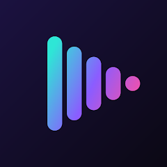
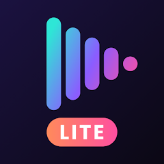

Tonspur – Musikplayer
Der elegante Musikplayer für deine eigene Musiksammlung – schnell, schön und komplett privat.
Über die App
Tonspur ist der elegante Musikplayer für deine eigene Musiksammlung – schnell, wunderschön und komplett privat.
Kein Konto, kein Abo, kein Tracking. Tonspur hat nicht einmal eine Internetberechtigung: Deine Musik und deine Daten bleiben auf deinem Gerät.
Hinweis: Tonspur spielt deine eigenen Audiodateien ab. Streaming-Dienste werden nicht unterstützt.
Funktionen
- Bibliothek nach Titeln, Alben, Künstlern und Genres – plus eigener Ordner-Reiter
- Blitzschnelle Suche mit Verlauf und Schnellscroll-Leiste für grosse Sammlungen
- Fast alle Formate: MP3, AAC, FLAC, ALAC, OGG, Opus, WAV und mehr – dank FFmpeg auch AC3, E-AC3 und DTS
- Lückenlose Wiedergabe für Live-Alben und DJ-Mixe
- Playlists per Drag & Drop, M3U-Import und -Export, intelligente Listen
- Equalizer mit 11 Presets, Bassverstärkung, Raumklang und Lautstärke-Angleichung
- Tempo von 0,5× bis 2× und „Stille überspringen“
- Dein Musikjahr: Top-Künstler, Top-Titel und Hörzeit als Story – nur auf deinem Gerät berechnet
- Material You: Player übernimmt die Farben des Album-Covers, hell, dunkel oder OLED-Schwarz
- Widget in fünf Grössen, Schlaf-Timer, Android Auto und Steuerung per Smartwatch
- Backup von Playlists, Favoriten, Statistik und Einstellungen – ideal beim Handywechsel
- In 9 Sprachen verfügbar
Versionen

Tonspur Lite
Mit WerbungDie kostenlose Version mit Werbeeinblendungen.
Bei Google Play laden Datenschutzerklärung